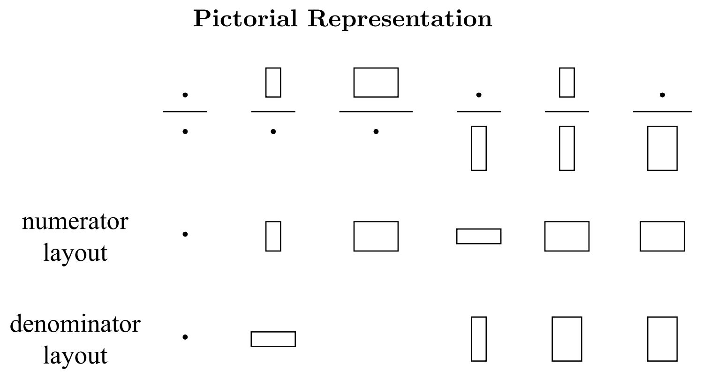

4. 常用矩阵求导公式¶
导数有两种不同的表示形式：
{kind=link}
这里使用 denominator layout 。
\(\mathbf{x},\mathbf{a},\mathbf{b}\) 均为 列向量 。
4.1. 一阶¶
\[\begin{split}\frac{\partial{(\mathbf{x}^{\top} \mathbf{a})}}{\partial{\mathbf{x}}} & = & \ \frac{\partial{(\mathbf{a}^{\top} \mathbf{x})}}{\partial{\mathbf{x}}} = \ \mathbf{a} \\
\frac{\partial{(\mathbf{a}^{\top} \mathbf{X} \mathbf{b})}}{\partial{\mathbf{X}}} & = & \ \mathbf{a} \mathbf{b}^{\top} \\
\frac{\partial{(\mathbf{a}^{\top} \mathbf{X}^{\top} \mathbf{b})}}{\partial{\mathbf{X}}} & = & \ \mathbf{b} \mathbf{a}^{\top} \\
\frac{\partial{(\mathbf{a}^{\top} \mathbf{X} \mathbf{a})}}{\partial{\mathbf{X}}} & = & \ \mathbf{a} \mathbf{a}^{\top} \\\end{split}\]
4.2. 二阶¶
\[\begin{split}\frac{\partial{(\mathbf{x}^{\top} \mathbf{x})}}{\partial{\mathbf{x}}} & = & \ 2 \mathbf{x} \\
\frac{\partial{(\mathbf{x}^{\top} \mathbf{B} \mathbf{x})}}{\partial{\mathbf{x}}} & = & \ (\mathbf{B} + \mathbf{B}^{\top}) \mathbf{x} \\
\frac{\partial{(\mathbf{a}^{\top} \mathbf{X}^{\top} \mathbf{X} \mathbf{b})}}{\partial{\mathbf{X}}} & = & \ \mathbf{X} (\mathbf{a}\mathbf{b}^{\top} + \mathbf{b}\mathbf{a}^{\top}) \\\end{split}\]
4.3. 迹¶
\(Tr(\mathbf{A}^{\top}\mathbf{B}) = Tr(\mathbf{B}^{\top}\mathbf{A})\)
\[\begin{split}\frac{\partial{(Tr(\mathbf{X}))}}{\partial{\mathbf{X}}} & = & \ \mathbf{I} \\
\frac{\partial{(Tr(\mathbf{X} \mathbf{A}))}}{\partial{\mathbf{X}}} & = & \ \mathbf{A}^{\top} \\
\frac{\partial{(Tr(\mathbf{X}^{\top} \mathbf{A}))}}{\partial{\mathbf{X}}} & = & \ \frac{\partial{(Tr(\mathbf{A} \mathbf{X}^{\top}))}}{\partial{\mathbf{X}}} = \ \mathbf{A} \\
\frac{\partial{(Tr(\mathbf{A} \mathbf{X} \mathbf{B}))}}{\partial{\mathbf{X}}} & = & \ \mathbf{A}^{\top}\mathbf{B}^{\top} \\
\frac{\partial{(Tr(\mathbf{A} \mathbf{X}^{\top} \mathbf{B}))}}{\partial{\mathbf{X}}} & = & \ \mathbf{B}\mathbf{A} \\
\frac{\partial{(Tr(\mathbf{X} \mathbf{X}^{\top}))}}{\partial{\mathbf{X}}} & = & \ 2 \mathbf{X} \\
\frac{\partial{(Tr(\mathbf{X}^{2}))}}{\partial{\mathbf{X}}} & = & \ 2 \mathbf{X}^{\top} \\
\frac{\partial{(Tr(\mathbf{X} \mathbf{B} \mathbf{X}^{\top}))}}{\partial{\mathbf{X}}} & = & \ \mathbf{X}\mathbf{B}^{\top} + \mathbf{X}\mathbf{B} \\
\frac{\partial{(Tr(\mathbf{X}^{\top} \mathbf{B} \mathbf{X}))}}{\partial{\mathbf{X}}} & = & \ \mathbf{B}\mathbf{X} + \mathbf{B}^{\top}\mathbf{X} \\\end{split}\]